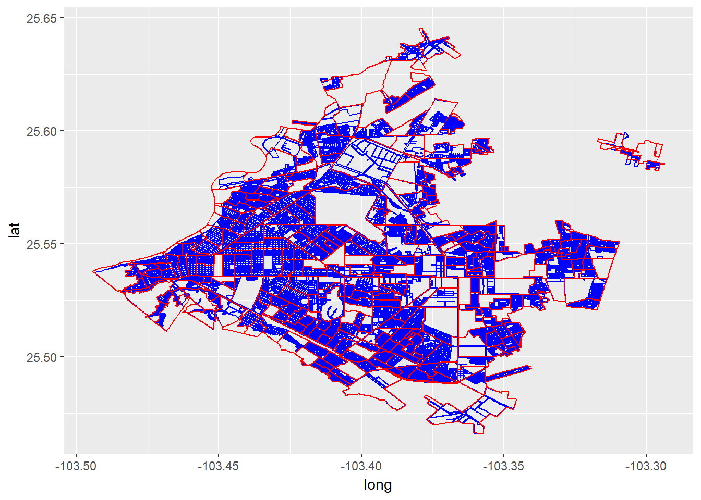

Curaduría Datos Abiertos INEGI
Agebs y Manzanas
Para seleccionar una zona determinada en manzanas, AGEBs o colonias es necesario cruzar la información del CENSO con la cartografía.
Cartografía nivel municipal de Torreón en manzanas (azul) AGEBs (roja)

Este artículo está licenciado bajo Creative Commons Attribution 3.0 License